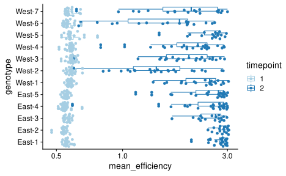

Setup
library(here)
# Tools for microbiome data
library(speedyseq)
# Tools for general purpose data manipulation and plotting
library(tidyverse)
# ggplot helpers
library(ggbeeswarm)
library(ggdist)
library(cowplot)
library(patchwork)
theme_set(theme_cowplot())
# stats helpers
library(broom)
library(metacal)
# library(rstanarm)
# options(mc.cores = 4)
# color pallets from leopold2020host
pal_treatment <- c("#2F4F4F", "#E69F00", "#56B4E9", "#009E73", "#F0E442")
pal_region <- c("#A2CD5A","#6E8B3D")
pal_genotype <- c("#800000FF", "#767676FF", "#CC8214FF", "#616530FF",
"#0F425CFF", "#9A5324FF", "#3E3E23FF", "#D6D6CEFF", "#FFB547FF", "#ADB17DFF",
"#5B8FA8FF", "#D49464FF")
Show code
## From the metacal 2.0 tutorial
# Download data from https://zenodo.org/record/3872145
data_path <- here::here("notebook/_data", "leopold2020host")
# To use a temporary directory:
# data_path <- file.path(tempdir(), "leopold2020")
if (!dir.exists(data_path)) {
dir.create(data_path, recursive = TRUE)
download.file(
"https://zenodo.org/record/3872145/files/dleopold/Populus_priorityEffects-v1.2.zip",
file.path(data_path, "Populus_priorityEffects-v1.2.zip")
)
unzip(
file.path(data_path, "Populus_priorityEffects-v1.2.zip"),
exdir = data_path
)
}
mock_actual <- file.path(data_path,
"dleopold-Populus_priorityEffects-8594f7c/data/MockCommunities.csv") %>%
read.csv(row.names = 1) %>%
select(-Sym4) %>%
as("matrix") %>%
otu_table(taxa_are_rows = FALSE) %>%
transform_sample_counts(function(x) close_elts(1 / x))
mock_taxa <- taxa_names(mock_actual)
commensal_taxa <- setdiff(mock_taxa, 'Melampsora')
# Rust severity
rust <- file.path(data_path, 'dleopold-Populus_priorityEffects-8594f7c',
'data/rust_measurements.csv'
) %>%
read_csv %>%
select(-1)
# summarize following approach from leopold
rust_summary <- rust %>%
janitor::clean_names() %>%
rename(plant_id = samp_id) %>%
with_groups(plant_id, summarize,
# across(ends_with('cm2'), mean)
rust_pct = sum(rust_cm2)/sum(leaf_cm2),
lesion_pct = sum(lesion_cm2) / sum(leaf_cm2),
leaf_area = sum(leaf_cm2),
leaf_n = n()
)
#> The microbiome data is stored in a phyloseq object,
ps_raw <- file.path(data_path,
"dleopold-Populus_priorityEffects-8594f7c/output/compiled/phy.rds") %>%
readRDS %>%
filter_tax_table(.otu %in% mock_taxa) %>%
mutate_sample_data(.,
Timepoint = factor(Timepoint),
sample_sum = sample_sums(.)
) %>%
mutate_sample_data(
plant_id = str_extract(.sample, 'G[0-9]+\\.T[0-9]+\\.R[0-9]+')
) %>%
left_join_sample_data(
rust_summary, by = 'plant_id'
) %>%
rename_with_sample_data(janitor::make_clean_names)
ps_mock <- ps_raw %>%
subset_samples(samp_type == "Mock") %>%
prune_taxa(mock_taxa, .)
Check sample sums,
sam <- ps_raw %>% sample_data %>% as_tibble
sam %>%
as_tibble %>%
ggplot(aes(sample_sum, fill = samp_type)) +
scale_x_log10() +
geom_histogram() +
scale_fill_brewer(type = 'qual')
# A tibble: 1 4
.sample timepoint treatment sample_sum
<chr> <fct> <chr> <dbl>
1 G12.T6.R4.TP1 1 Negative 1366The sample with less than 3000 reads is in the Negative treatment group and so will be ignored in our analysis of the T1 samples.
Lets check the distribution of proportions of the mock taxa across samples.
ps_raw %>%
filter_sample_data(samp_type == "Experiment", treatment != 'Negative') %>%
filter_tax_table(.otu %in% mock_taxa) %>%
transform_sample_counts(close_elts) %>%
as_tibble %>%
ggplot(aes(y = .otu, x = .abundance + 1e-5)) +
facet_wrap(~timepoint) +
scale_x_log10() +
stat_slab()
T1 samples have reads of Melampsora, which may be contamination. For our analysis, lets subset to the mock taxa and just the experimental samples, and set Melampsora in T1 to zero.
otu_new <- ps_raw %>%
filter_tax_table(.otu %in% mock_taxa) %>%
filter_sample_data(samp_type == "Experiment", treatment != 'Negative') %>%
as_tibble %>%
mutate(.abundance = ifelse(
timepoint == 1 & .otu == 'Melampsora', 0, .abundance
)) %>%
select(.sample, .otu, .abundance) %>%
pivot_wider(names_from = .otu, values_from = .abundance) %>%
otu_table(taxa_are_rows = FALSE)
ps <- ps_raw
otu_table(ps) <- otu_new
rm(otu_new)
Confirm that Mel is zerod in the t1 samples,
ps %>%
prune_taxa('Melampsora', .) %>%
as_tibble %>%
with_groups(timepoint, summarize,
across(.abundance, list(median = median, perc_pos = ~mean(. > 0) ))
)
# A tibble: 2 3
timepoint .abundance_median .abundance_perc_pos
<fct> <dbl> <dbl>
1 1 0 0
2 2 12175 1Bias estimation
We estimate bias using metacal::estimate_bias(); see the metacal tutorial for more information. Leopold and Busby (2020) identified the sample Mock.5 as an outlier sample and excluded it when estimating bias. One taxon in this sample, Epicoccum, was undetected, and including it leads to a larger standard error especially for this taxon (as seen in the metacal tutorial). We could improve our bias estimates by setting this taxons nominal abundance to 0 in this sample; however, lets just drop this sample to maintain consistent bias estimates with those used in the original study.
control_samples <- ps_mock %>% sample_names %>% setdiff('Mock.5')
mc_fit <- estimate_bias(
ps_mock %>% prune_samples(control_samples, .),
mock_actual %>% prune_samples(control_samples, .),
boot = TRUE
)
bias <- coef(mc_fit) %>% print(digits = 2)
Melampsora Dioszegia Epicoccum Fusarium Penicillium
8.57 0.28 1.57 2.79 0.21
Cladosporium Trichoderma Alternaria Aureobasidium
0.86 0.54 1.46 0.67 mc_fit_summary <- summary(mc_fit)
coef_tb <- mc_fit_summary$coefficients
coef_tb %>%
mutate(taxon = fct_reorder(taxon, estimate)) %>%
ggplot(aes(taxon, estimate,
ymin = estimate / gm_se^2, ymax = estimate * gm_se^2)) +
geom_hline(yintercept = 1, color = "grey") +
geom_pointrange() +
scale_y_log10() +
coord_flip()
T1 samples
From our previous analyses, we know that there is little impact of bias correction on the primary analyses done on these samples, and also that there is fairly little variation in the mean efficiency in the T1 samples. Here we further explore the variation in both the species proportions and the mean efficiency to more fully understand why bias has little impact on DA analysis.
Setup
Here we subset to the T1 experimental samples and the commensal taxa. The analysis of T1 samples by Leopold and Busby (2020) first subsets to just the 8 commensal (non-pathogenic) inoculum taxa, and we follow suit here. It excludes Melampsora and OTUs not identified with the 9 inoculum taxa. In addition, we add the sample sums and mean efficiency to the sample data, after subsetting to the commensals.
# Bias among the commensals; for convenience, set relative to max
bias_t1 <- bias[names(bias) != 'Melampsora']
bias_t1 <- bias_t1 / max(bias_t1)
most_efficient_taxon <- which.max(bias_t1) %>% names
stopifnot(most_efficient_taxon == 'Fusarium')
ps_t1 <- ps %>%
filter_sample_data(timepoint == 1) %>%
filter_tax_table(.otu %in% commensal_taxa) %>%
mutate_sample_data(.,
sample_sum = sample_sums(.),
mean_efficiency = mean_efficiency(., bias_t1, type = 'observed')
)
sam_t1 <- ps_t1 %>% sample_data %>% as_tibble
A small fraction (0.0328) of the observed counts are zero. For calculations that ignore the counting error, we want to ensure there are only positive abundances. We will replace zeros using zCompositions::cmultRepl() following Leopold and Busby (2020), then recompute the mean efficiency (which should only change very slightly).
stopifnot(taxa_are_rows(ps_t1) == FALSE)
otu_new <- ps_t1 %>%
otu_table %>%
as('matrix') %>%
zCompositions::cmultRepl(
method = 'GBM',
output = 'p-counts',
suppress.print = TRUE
)
ps_t1_repl <- ps_t1
otu_table(ps_t1_repl) <- otu_table(otu_new, taxa_are_rows = FALSE)
rm(otu_new)
ps_t1_repl <- ps_t1_repl %>%
mutate_sample_data(.,
mean_efficiency_initial = mean_efficiency,
mean_efficiency = calibrate(., bias_t1, norm = 'close') %>%
perturb(bias_t1, norm = 'none') %>%
sample_sums,
)
Lets create a data frame with the observed and calibrated proportions of each species, with their efficiencies added in.
props <- ps_t1_repl %>%
as_tibble %>%
left_join(bias_t1 %>% enframe('.otu', 'efficiency'),
by = '.otu'
) %>%
with_groups(.sample, mutate,
prop_obs = close_elts(.abundance),
prop_cal = close_elts(.abundance / efficiency),
) %>%
mutate(
.otu_fct = fct_reorder(.otu, efficiency)
)
Variation in mean efficiency
Lets examine the variation in mean efficiency
lyrs <- list(
geom_histogram(),
scale_x_log10(),
expand_limits(x = 1.2),
scale_fill_brewer(type = "qual"),
labs(
x = "Mean efficiency",
y = "Number of samples",
# fill = ''
)
)
p1 <- sam_t1 %>%
ggplot(aes(mean_efficiency, fill = region)) +
lyrs
p2 <- sam_t1 %>%
ggplot(aes(mean_efficiency, fill = treatment)) +
lyrs
p1 / p2
The relative efficiency has a geometric range of 13-fold and a geometric standard deviation of 2.41-fold. But the mean efficiencys geometric range is only 1.62-fold and its geometric standard deviation is just 1.05-fold.
Variation in proportions vs mean efficiency
First lets create some summary statistics of the calibrated proportions, to compare to those of the mean efficiency.
props %>%
with_groups(.otu_fct, summarize,
across(prop_cal,
list(gm_mean = gm_mean, gm_sd = gm_sd, gm_range = gm_range),
.names = '{.fn}'
)
) %>%
arrange(desc(.otu_fct)) %>%
mutate(across(-.otu_fct, signif, 3)) %>%
knitr::kable()
| .otu_fct | gm_mean | gm_sd | gm_range |
|---|---|---|---|
| Fusarium | 0.12400 | 1.49 | 13.10 |
| Epicoccum | 0.19800 | 1.46 | 20.60 |
| Alternaria | 0.55700 | 1.18 | 2.79 |
| Cladosporium | 0.02820 | 1.76 | 43.30 |
| Aureobasidium | 0.00944 | 1.99 | 1700.00 |
| Trichoderma | 0.00368 | 3.40 | 8190.00 |
| Dioszegia | 0.02650 | 1.85 | 30.30 |
| Penicillium | 0.00189 | 9.45 | 8990.00 |
Now lets create the main figure showing the variation in taxa proportions against that in the mean efficiency, with the individual taxa efficiencies also shown for more context.
Caption: In the pre-infection samples from Leopold and Busby (2020), multiplicative variation in taxa proportions is much larger than that in the mean efficiency. Panel A shows the distribution of the proportions of each commensal isolate (denoted by its genus) across all samples collected prior to pathogen inoculation; Panel C shows the distribution of the (estimated) sample mean efficiency across these same samples on the same scale; and Panel B shows the efficiency of each taxon estimated from DNA mock communities as point estimates and 90% bootstrap percentile confidence intervals. Efficiencies are shown relative to the most efficiently measured taxon (Fusarium).
rng <- props %>% pull(prop_cal) %>% range
## species proportions
p_props <- props %>%
ggplot(aes(y = .otu_fct, x = prop_cal)) +
scale_x_log10() +
stat_slab() +
labs(x = 'Proportion', y = NULL)
## mean efficiency
p_me <- sam_t1 %>%
ggplot(aes(y = 'Mean efficiency', x = mean_efficiency)) +
scale_x_log10() +
expand_limits(x = rng) +
stat_slab() +
labs(x = 'Efficiency relative to Fusarium', y = NULL)
# p_me / p_props + plot_layout(heights = c(0.1, 1))
## Estimated efficiency with bootstrap CIs
x <- mc_fit$bootreps %>%
data.table::as.data.table(keep.rownames = '.id') %>%
select(.id, all_of(commensal_taxa)) %>%
mutate(across(-.id, ~. / Fusarium)) %>%
pivot_longer(-.id, names_to = 'taxon', values_to = 'efficiency')
p_eff <- x %>%
mutate(taxon = fct_reorder(taxon, efficiency)) %>%
ggplot(aes(y = taxon, x = efficiency)) +
stat_pointinterval(.width = 0.9) +
scale_x_log10() +
labs(x = str_glue('Efficiency relative to Fusarium'), y = NULL)
p_props + p_eff + p_me + plot_spacer() +
plot_layout(heights = c(1, 0.15), widths = c(1, 0.8), ncol = 2) +
plot_annotation(tag_levels = 'A')
Change in commensals due to infection
Goal: Do a linear regression analysis of change in log proportion following pathogen colonization (from T1 to T2).
Note, I am keeping in the pathogen Melampsora for this analysis. The increase in Mel proportion post infection is a major driver of the impact of bias, since it causes the mean efficiency to increase. If we instead considered the proportions among just the commensals, then we would get different results. The results here, with Mel included, are the most informative for what would happen if we were performing absolute-abundance analysis using total-community normalization.
Setup
For doing simple linear regression, we must replace zeros with positive values. I will use zCompositions::cmultRepl() as in Leopold and Busby (2020) for simplicity and consistency with our other analyses in this case study. I will recompute the mean efficiency with these new compositions; however, zero replacement will have a minimal impact on the mean efficiency.
bias_inf <- bias/bias['Fusarium']
ps_inf <- ps %>%
mutate_sample_data(.,
sample_sum = sample_sums(.),
mean_efficiency = mean_efficiency(., bias_inf, type = 'observed')
)
stopifnot(taxa_are_rows(ps_inf) == FALSE)
otu_new <- ps_inf %>%
otu_table %>%
as('matrix') %>%
zCompositions::cmultRepl(
method = 'GBM',
output = 'p-counts',
suppress.print = TRUE
)
ps_inf_repl <- ps_inf
otu_table(ps_inf_repl) <- otu_table(otu_new, taxa_are_rows = FALSE)
rm(otu_new)
ps_inf_repl <- ps_inf_repl %>%
mutate_sample_data(.,
sample_sum = sample_sums(.),
mean_efficiency = mean_efficiency(., bias_inf, type = 'observed')
)
Variation in mean efficiency
From our previous explorations, we know that the mean efficiency tends to increase post infection due to the higher proportion of Melampsora.
Lets see this again,
mel <- ps_inf %>%
calibrate(bias = bias_inf) %>%
transform_sample_counts(close_elts) %>%
prune_taxa("Melampsora", .) %>%
otu_table %>%
as_tibble %>%
select(.sample, melampsora_prop = .abundance)
sam <- ps_inf_repl %>% sample_data %>% as_tibble %>%
left_join(mel, by = '.sample')
p_hist <- sam %>%
ggplot(aes(fill = timepoint, x = mean_efficiency)) +
scale_x_log10() +
geom_histogram() +
scale_fill_brewer(type = "qual") +
labs(
x = "Mean efficiency",
y = "Number of samples",
fill = 'Timepoint'
)
p_mel <- sam %>%
ggplot(aes(y = melampsora_prop, x = mean_efficiency, color = timepoint)) +
geom_point() +
scale_x_log10() +
scale_y_continuous(
trans = scales::pseudo_log_trans(sigma = 1e-2),
breaks = c(0, 0.01, 0.1, 0.5, 1)
) +
scale_color_brewer(type = "qual") +
labs(
y = "Pathogen proportion",
x = "Mean efficiency",
color = 'Timepoint'
)
p_hist / p_mel +
plot_annotation(tag_levels = "A")
Lets visualize the pre and post infection mean effs by host genotype.
ps_inf_repl %>%
sample_data %>%
as_tibble %>%
ggplot(aes(y = genotype, x = mean_efficiency,
color = timepoint)) +
scale_x_log10() +
geom_boxplot() +
geom_quasirandom(groupOnX = FALSE) +
scale_color_brewer(type = 'qual', palette = 3)

The mean efficiency generally increases by a similar factor in each genotype.
Lets measure the average fold increase in each genotype.
x <- mean_eff_reg %>%
filter(term == 'timepoint2') %>%
mutate(across(c(estimate, std.error), exp))
x %>% select(genotype:std.error) %>% arrange(genotype) %>%
knitr::kable(digits = 3)
| genotype | term | estimate | std.error |
|---|---|---|---|
| East-1 | timepoint2 | 4.974 | 1.022 |
| East-2 | timepoint2 | 5.244 | 1.020 |
| East-3 | timepoint2 | 4.466 | 1.035 |
| East-4 | timepoint2 | 4.352 | 1.073 |
| East-5 | timepoint2 | 4.299 | 1.061 |
| West-1 | timepoint2 | 3.952 | 1.049 |
| West-2 | timepoint2 | 2.490 | 1.088 |
| West-3 | timepoint2 | 3.226 | 1.076 |
| West-4 | timepoint2 | 3.447 | 1.071 |
| West-5 | timepoint2 | 4.222 | 1.048 |
| West-6 | timepoint2 | 2.620 | 1.109 |
| West-7 | timepoint2 | 3.212 | 1.106 |
x %>%
ggplot(aes(y = genotype, x = estimate)) +
expand_limits(x = c(1, 6)) +
scale_x_log10() +
geom_vline(xintercept = 1, color = 'grey') +
geom_point() +
geom_linerange(
aes(
xmin = estimate * std.error^2,
xmax = estimate / std.error^2
)
)
The FC in mean efficiency ranges from 2.49 to 5.24.
Simple linear regression of log proportion
Run a simple linear regression with lm on log proportion,
res_lm <- ps_inf_repl %>%
as_tibble %>%
left_join(bias_inf %>% enframe('.otu', 'efficiency'), by = '.otu') %>%
with_groups(.sample, mutate,
log_prop = log(close_elts(.abundance))
) %>%
filter(.otu %in% commensal_taxa) %>%
mutate(
offset_obs = 0,
offset_cal = log(efficiency / mean_efficiency),
) %>%
with_groups(c(.otu, genotype), nest) %>%
mutate(
Observed = map(data,
~lm(
log_prop ~ timepoint + offset(offset_obs),
data = .x,
)),
Calibrated = map(data,
~lm(
log_prop ~ timepoint + offset(offset_cal),
data = .x,
)),
) %>%
select(-data) %>%
pivot_longer(c(Observed, Calibrated), names_to = 'type', values_to = 'fit')
res_lm_tidy <- res_lm %>%
mutate(across(fit, map, broom.mixed::tidy, conf.int = TRUE)) %>%
unnest(fit) %>%
filter(term != '(Intercept)')
res_lm_tidy_wide <- res_lm_tidy %>%
select(.otu, genotype, type, estimate, std.error, conf.low, conf.high, p.value) %>%
pivot_wider(names_from = type,
values_from = c(estimate, std.error, conf.low, conf.high, p.value)) %>%
glimpse
Rows: 96
Columns: 12
$ .otu <chr> "Aureobasidium", "Aureobasidium", "Aure
$ genotype <chr> "West-7", "East-1", "East-2", "West-5",
$ estimate_Observed <dbl> -2.320913, -4.649869, -5.158821, -3.690
$ estimate_Calibrated <dbl> -1.1540542, -3.0456064, -3.5016735, -2.
$ std.error_Observed <dbl> 0.5799465, 0.3149781, 0.3133921, 0.4267
$ std.error_Calibrated <dbl> 0.5161804, 0.3025285, 0.3088991, 0.4121
$ conf.low_Observed <dbl> -3.497099, -5.287509, -5.797989, -4.558
$ conf.low_Calibrated <dbl> -2.200917, -3.658043, -4.131677, -3.088
$ conf.high_Observed <dbl> -1.1447273, -4.0122296, -4.5196540, -2.
$ conf.high_Calibrated <dbl> -0.10719181, -2.43316958, -2.87166967,
$ p.value_Observed <dbl> 2.997790e-04, 2.533626e-17, 7.102308e-1
$ p.value_Calibrated <dbl> 3.165942e-02, 2.833514e-12, 1.478059e-1Check that the corrections are the same for each taxon within a genotype, but differ by genotype.
res_lm_tidy_wide %>%
ggplot(aes(y = .otu, x = estimate_Calibrated - estimate_Observed, color = .otu)) +
scale_color_manual(values = pal_genotype, guide = NULL) +
facet_wrap(~genotype) +
geom_point()
The corrections are the same within genotypes, as expected, and vary to a small degree between genotypes. They tend to be larger for Eastern genotypes; this matches with the finding that Eastern genotypes are more susceptible to rust, and so we should expect the Melampsora proportions to be larger.
Lets visualize the impact of bias correction on the coefficients, in a couple ways. First, lets plot the uncorrected against the corrected estimates.
res_lm_tidy_wide %>%
ggplot(aes(x = estimate_Calibrated, y = estimate_Observed, color = .otu)) +
scale_color_manual(values = pal_genotype) +
facet_wrap(~genotype, ncol = 4) +
theme_minimal_grid() +
theme() +
coord_fixed() +
scale_x_continuous(breaks = seq(-6, 2, 2)) +
labs(
x = 'Estimate with bias correction',
y = 'Estimate without bias correction',
color = 'Taxon'
) +
geom_hline(yintercept = 0, color = 'black') +
geom_vline(xintercept = 0, color = 'black') +
geom_abline(color = 'darkred') +
geom_linerange(
aes(
xmin = conf.low_Calibrated,
xmax = conf.high_Calibrated,
)
) +
geom_linerange(
aes(
ymin = conf.low_Observed,
ymax = conf.high_Observed,
)
) +
geom_point(size = 2)

This figure makes it clear how the constant shift maintains a perfect correlation between estimates. But it is perhaps easier to see the biological impact on the results if we plot the two estimate types in a straight line,
res_lm_tidy %>%
mutate(
across(.otu, fct_reorder, estimate),
) %>%
ggplot(aes(y =.otu, color = type,
x = estimate,
xmin = estimate - 2 * std.error,
xmax = estimate + 2 * std.error
)) +
facet_wrap(~genotype, ncol = 4, scale = 'free_x') +
theme(
axis.line.y = element_blank(),
legend.position = 'top',
panel.spacing.x = unit(4, 'mm')
) +
scale_x_continuous(labels = formatC) +
colorblindr::scale_color_OkabeIto() +
labs(
x = 'Estimated LFC',
y = 'Taxon',
color = 'Type'
) +
geom_vline(xintercept = 0, size = 0.5, color = 'grey') +
geom_pointrange(fatten = 2)
Gamma-Poisson regression
There are a large fraction of zeros at T1 for the lower abundance and/or efficiency taxa, making it more appropriate to apply gamma Poisson model directly to the counts.
library(rstanarm)
options(mc.cores = parallel::detectCores())
Consider the prior on the intercept. Here the offsets will include the read depth, and so we want to set the intercept prior to be for the proportions.
TODO: Set prior in a well-defined way.
x <- ps_inf %>%
transform_sample_counts(~close_elts(0.3 + .)) %>%
filter_tax_table(.otu %in% commensal_taxa) %>%
as_tibble %>%
with_groups(c(.otu, genotype), summarize, across(.abundance, gm_mean)) %>%
pull(.abundance) %>%
summary
x %>% signif(2)
Min. 1st Qu. Median Mean 3rd Qu. Max.
4.7e-05 3.4e-04 2.2e-03 2.8e-02 3.9e-02 2.3e-01 [1] 3e-05 4e+00custom_prior_intercept <- normal(location = mu, scale = sigma)
res_gp <- xfun::cache_rds({
tbl_gp %>%
mutate(
Observed = map(data,
~stan_glm(data = .x,
.abundance ~ timepoint + offset(offset_obs),
prior_intercept = custom_prior_intercept,
family = neg_binomial_2, seed = 42, algorithm = 'sampling'
)
),
Calibrated = map(data,
~stan_glm(data = .x,
.abundance ~ timepoint + offset(offset_cal),
prior_intercept = custom_prior_intercept,
family = neg_binomial_2, seed = 42, algorithm = 'sampling'
)
),
) %>%
select(-data) %>%
pivot_longer(c(Observed, Calibrated), names_to = 'type', values_to = 'fit')
}, dir = '_cache/', file = 'res_gp',
hash = list(tbl_gp, custom_prior_intercept))
res_gp_tidy <- res_gp %>%
mutate(across(fit, map, broom.mixed::tidy, conf.int = TRUE)) %>%
unnest(fit) %>%
filter(term != '(Intercept)')
res_gp_tidy %>%
filter(term == 'timepoint2') %>%
mutate(
across(.otu, fct_reorder, estimate),
) %>%
ggplot(aes(y =.otu, color = type,
x = estimate,
xmin = conf.low,
xmax = conf.high
)) +
facet_wrap(~genotype, ncol = 4, scale = 'free_x') +
theme(
axis.line.y = element_blank(),
legend.position = 'top',
panel.spacing.x = unit(4, 'mm')
) +
scale_x_continuous(labels = formatC) +
colorblindr::scale_color_OkabeIto() +
labs(
x = 'Estimated LFC',
y = 'Taxon',
color = 'Type'
) +
geom_vline(xintercept = 0, size = 0.5, color = 'grey') +
geom_pointrange(fatten = 2)
Session info
Click for session info
sessioninfo::session_info()
Session info
setting value
version R version 4.1.2 (2021-11-01)
os Arch Linux
system x86_64, linux-gnu
ui X11
language (EN)
collate en_US.UTF-8
ctype en_US.UTF-8
tz America/New_York
date 2022-03-08
pandoc 2.14.2 @ /usr/bin/ (via rmarkdown)
Packages
package * version date (UTC) lib source
ade4 1.7-18 2021-09-16 [1] CRAN (R 4.1.1)
ape 5.6-1 2022-01-07 [1] CRAN (R 4.1.2)
assertthat 0.2.1 2019-03-21 [1] CRAN (R 4.0.0)
backports 1.4.1 2021-12-13 [1] CRAN (R 4.1.2)
base64enc 0.1-3 2015-07-28 [1] CRAN (R 4.0.0)
bayesplot 1.8.1 2021-06-14 [1] CRAN (R 4.1.0)
beeswarm 0.4.0 2021-06-01 [1] CRAN (R 4.1.0)
Biobase 2.52.0 2021-05-19 [1] Bioconductor
BiocGenerics 0.38.0 2021-05-19 [1] Bioconductor
biomformat 1.20.0 2021-05-19 [1] Bioconductor
Biostrings 2.60.2 2021-08-05 [1] Bioconductor
bit 4.0.4 2020-08-04 [1] CRAN (R 4.0.2)
bit64 4.0.5 2020-08-30 [1] CRAN (R 4.0.2)
bitops 1.0-7 2021-04-24 [1] CRAN (R 4.1.0)
boot 1.3-28 2021-05-03 [2] CRAN (R 4.1.2)
broom * 0.7.11 2022-01-03 [1] CRAN (R 4.1.2)
broom.mixed 0.2.7 2021-07-07 [1] CRAN (R 4.1.2)
bslib 0.3.1 2021-10-06 [1] CRAN (R 4.1.1)
cachem 1.0.6 2021-08-19 [1] CRAN (R 4.1.1)
callr 3.7.0 2021-04-20 [1] CRAN (R 4.1.0)
cellranger 1.1.0 2016-07-27 [1] CRAN (R 4.0.0)
cli 3.2.0 2022-02-14 [1] CRAN (R 4.1.2)
cluster 2.1.2 2021-04-17 [2] CRAN (R 4.1.2)
codetools 0.2-18 2020-11-04 [2] CRAN (R 4.1.2)
colorblindr 0.1.0 2021-08-27 [1] Github (clauswilke/colorblindr@e6730be)
colorspace 2.0-2 2021-08-11 [1] R-Forge (R 4.1.1)
colourpicker 1.1.1 2021-10-04 [1] CRAN (R 4.1.1)
cowplot * 1.1.1 2021-08-27 [1] Github (wilkelab/cowplot@555c9ae)
crayon 1.5.0 2022-02-14 [1] CRAN (R 4.1.2)
crosstalk 1.2.0 2021-11-04 [1] CRAN (R 4.1.2)
data.table 1.14.2 2021-09-27 [1] CRAN (R 4.1.1)
DBI 1.1.2 2021-12-20 [1] CRAN (R 4.1.2)
dbplyr 2.1.1 2021-04-06 [1] CRAN (R 4.0.5)
digest 0.6.29 2021-12-01 [1] CRAN (R 4.1.2)
distill 1.3 2021-10-13 [1] CRAN (R 4.1.1)
distributional 0.3.0 2022-01-05 [1] CRAN (R 4.1.2)
downlit 0.4.0 2021-10-29 [1] CRAN (R 4.1.2)
dplyr * 1.0.8 2022-02-08 [1] CRAN (R 4.1.2)
DT 0.20 2021-11-15 [1] CRAN (R 4.1.2)
dygraphs 1.1.1.6 2018-07-11 [1] CRAN (R 4.0.2)
ellipsis 0.3.2 2021-04-29 [1] CRAN (R 4.1.0)
evaluate 0.14 2019-05-28 [1] CRAN (R 4.0.0)
fansi 1.0.2 2022-01-14 [1] CRAN (R 4.1.2)
farver 2.1.0 2021-02-28 [1] CRAN (R 4.0.4)
fastmap 1.1.0 2021-01-25 [1] CRAN (R 4.0.4)
forcats * 0.5.1 2021-01-27 [1] CRAN (R 4.0.4)
foreach 1.5.1 2020-10-15 [1] CRAN (R 4.0.3)
fs 1.5.2 2021-12-08 [1] CRAN (R 4.1.2)
generics 0.1.2 2022-01-31 [1] CRAN (R 4.1.2)
GenomeInfoDb 1.28.4 2021-09-05 [1] Bioconductor
GenomeInfoDbData 1.2.6 2021-05-31 [1] Bioconductor
ggbeeswarm * 0.6.0 2017-08-07 [1] CRAN (R 4.0.0)
ggdist * 3.0.1 2021-11-30 [1] CRAN (R 4.1.2)
ggplot2 * 3.3.5 2021-06-25 [1] CRAN (R 4.1.0)
ggridges 0.5.3 2021-01-08 [1] CRAN (R 4.0.4)
glue 1.6.1 2022-01-22 [1] CRAN (R 4.1.2)
gridExtra 2.3 2017-09-09 [1] CRAN (R 4.0.2)
gtable 0.3.0 2019-03-25 [1] CRAN (R 4.0.0)
gtools 3.9.2 2021-06-06 [1] CRAN (R 4.1.0)
haven 2.4.3 2021-08-04 [1] CRAN (R 4.1.1)
here * 1.0.1 2020-12-13 [1] CRAN (R 4.0.5)
highr 0.9 2021-04-16 [1] CRAN (R 4.1.0)
hms 1.1.1 2021-09-26 [1] CRAN (R 4.1.1)
htmltools 0.5.2 2021-08-25 [1] CRAN (R 4.1.1)
htmlwidgets 1.5.4 2021-09-08 [1] CRAN (R 4.1.1)
httpuv 1.6.5 2022-01-05 [1] CRAN (R 4.1.2)
httr 1.4.2 2020-07-20 [1] CRAN (R 4.0.2)
igraph 1.2.11 2022-01-04 [1] CRAN (R 4.1.2)
inline 0.3.19 2021-05-31 [1] CRAN (R 4.1.0)
IRanges 2.26.0 2021-05-19 [1] Bioconductor
iterators 1.0.13 2020-10-15 [1] CRAN (R 4.0.3)
janitor 2.1.0 2021-01-05 [1] CRAN (R 4.0.4)
jquerylib 0.1.4 2021-04-26 [1] CRAN (R 4.1.0)
jsonlite 1.7.3 2022-01-17 [1] CRAN (R 4.1.2)
knitr 1.37 2021-12-16 [1] CRAN (R 4.1.2)
labeling 0.4.2 2020-10-20 [1] CRAN (R 4.0.3)
later 1.3.0 2021-08-18 [1] CRAN (R 4.1.1)
lattice 0.20-45 2021-09-22 [2] CRAN (R 4.1.2)
lifecycle 1.0.1 2021-09-24 [1] CRAN (R 4.1.1)
lme4 1.1-27.1 2021-06-22 [1] CRAN (R 4.1.0)
loo 2.4.1 2020-12-09 [1] CRAN (R 4.0.3)
lubridate 1.8.0 2021-10-07 [1] CRAN (R 4.1.1)
magrittr 2.0.2 2022-01-26 [1] CRAN (R 4.1.2)
markdown 1.1 2019-08-07 [1] CRAN (R 4.0.0)
MASS 7.3-54 2021-05-03 [2] CRAN (R 4.1.2)
Matrix 1.3-4 2021-06-01 [2] CRAN (R 4.1.2)
matrixStats 0.61.0 2021-09-17 [1] CRAN (R 4.1.1)
memoise 2.0.1 2021-11-26 [1] CRAN (R 4.1.2)
metacal * 0.2.0.9010 2022-02-15 [1] Github (mikemc/metacal@f56792d)
mgcv 1.8-38 2021-10-06 [2] CRAN (R 4.1.2)
mime 0.12 2021-09-28 [1] CRAN (R 4.1.1)
miniUI 0.1.1.1 2018-05-18 [1] CRAN (R 4.0.2)
minqa 1.2.4 2014-10-09 [1] CRAN (R 4.0.2)
modelr 0.1.8 2020-05-19 [1] CRAN (R 4.0.0)
multtest 2.48.0 2021-05-19 [1] Bioconductor
munsell 0.5.0 2018-06-12 [1] CRAN (R 4.0.0)
NADA 1.6-1.1 2020-03-22 [1] CRAN (R 4.0.1)
nlme 3.1-153 2021-09-07 [2] CRAN (R 4.1.2)
nloptr 1.2.2.3 2021-11-02 [1] CRAN (R 4.1.2)
nvimcom * 0.9-102 2021-11-12 [1] local
patchwork * 1.1.1 2020-12-17 [1] CRAN (R 4.0.3)
permute 0.9-5 2019-03-12 [1] CRAN (R 4.0.0)
phyloseq * 1.36.0 2021-05-19 [1] Bioconductor
pillar 1.7.0 2022-02-01 [1] CRAN (R 4.1.2)
pkgbuild 1.3.1 2021-12-20 [1] CRAN (R 4.1.2)
pkgconfig 2.0.3 2019-09-22 [1] CRAN (R 4.0.0)
plyr 1.8.6 2020-03-03 [1] CRAN (R 4.0.0)
prettyunits 1.1.1 2020-01-24 [1] CRAN (R 4.0.0)
processx 3.5.2 2021-04-30 [1] CRAN (R 4.1.0)
promises 1.2.0.1 2021-02-11 [1] CRAN (R 4.0.4)
ps 1.6.0 2021-02-28 [1] CRAN (R 4.0.4)
purrr * 0.3.4 2020-04-17 [1] CRAN (R 4.0.0)
R6 2.5.1 2021-08-19 [1] CRAN (R 4.1.1)
RColorBrewer 1.1-2 2014-12-07 [1] CRAN (R 4.0.0)
Rcpp * 1.0.8 2022-01-13 [1] CRAN (R 4.1.2)
RcppParallel 5.1.5 2022-01-05 [1] CRAN (R 4.1.2)
RCurl 1.98-1.5 2021-09-17 [1] CRAN (R 4.1.1)
readr * 2.1.1 2021-11-30 [1] CRAN (R 4.1.2)
readxl 1.3.1 2019-03-13 [1] CRAN (R 4.0.0)
reprex 2.0.1 2021-08-05 [1] CRAN (R 4.1.1)
reshape2 1.4.4 2020-04-09 [1] CRAN (R 4.0.0)
rhdf5 2.36.0 2021-05-19 [1] Bioconductor
rhdf5filters 1.4.0 2021-05-19 [1] Bioconductor
Rhdf5lib 1.14.2 2021-07-06 [1] Bioconductor
rlang 1.0.1 2022-02-03 [1] CRAN (R 4.1.2)
rmarkdown * 2.11 2021-09-14 [1] CRAN (R 4.1.1)
rprojroot 2.0.2 2020-11-15 [1] CRAN (R 4.0.3)
rsconnect 0.8.25 2021-11-19 [1] CRAN (R 4.1.2)
rstan 2.21.3 2021-12-19 [1] CRAN (R 4.1.2)
rstanarm * 2.21.1 2020-07-20 [1] CRAN (R 4.0.2)
rstantools 2.1.1 2020-07-06 [1] CRAN (R 4.0.2)
rstudioapi 0.13 2020-11-12 [1] CRAN (R 4.0.3)
rvest 1.0.2 2021-10-16 [1] CRAN (R 4.1.1)
S4Vectors 0.30.2 2021-10-03 [1] Bioconductor
sass 0.4.0 2021-05-12 [1] CRAN (R 4.1.0)
scales 1.1.1 2020-05-11 [1] CRAN (R 4.0.0)
sessioninfo 1.2.2 2021-12-06 [1] CRAN (R 4.1.2)
shiny 1.7.1 2021-10-02 [1] CRAN (R 4.1.1)
shinyjs 2.1.0 2021-12-23 [1] CRAN (R 4.1.2)
shinystan 2.5.0 2018-05-01 [1] CRAN (R 4.0.2)
shinythemes 1.2.0 2021-01-25 [1] CRAN (R 4.0.4)
snakecase 0.11.0 2019-05-25 [1] CRAN (R 4.0.0)
speedyseq * 0.5.3.9018 2021-06-29 [1] Github (mikemc/speedyseq@ceb941f)
StanHeaders 2.21.0-7 2020-12-17 [1] CRAN (R 4.0.3)
stringi 1.7.6 2021-11-29 [1] CRAN (R 4.1.2)
stringr * 1.4.0 2019-02-10 [1] CRAN (R 4.0.0)
survival 3.2-13 2021-08-24 [2] CRAN (R 4.1.2)
threejs 0.3.3 2020-01-21 [1] CRAN (R 4.0.2)
tibble * 3.1.6 2021-11-07 [1] CRAN (R 4.1.2)
tidyr * 1.2.0 2022-02-01 [1] CRAN (R 4.1.2)
tidyselect 1.1.1 2021-04-30 [1] CRAN (R 4.1.0)
tidyverse * 1.3.1 2021-04-15 [1] CRAN (R 4.1.0)
truncnorm 1.0-8 2018-02-27 [1] CRAN (R 4.0.1)
tzdb 0.2.0 2021-10-27 [1] CRAN (R 4.1.2)
useful 1.2.6 2018-10-08 [1] CRAN (R 4.0.0)
utf8 1.2.2 2021-07-24 [1] CRAN (R 4.1.0)
vctrs 0.3.8 2021-04-29 [1] CRAN (R 4.1.0)
vegan 2.5-7 2020-11-28 [1] CRAN (R 4.0.3)
vipor 0.4.5 2017-03-22 [1] CRAN (R 4.0.0)
vroom 1.5.7 2021-11-30 [1] CRAN (R 4.1.2)
withr 2.4.3 2021-11-30 [1] CRAN (R 4.1.2)
xfun 0.29 2021-12-14 [1] CRAN (R 4.1.2)
xml2 1.3.3 2021-11-30 [1] CRAN (R 4.1.2)
xtable 1.8-4 2019-04-21 [1] CRAN (R 4.0.0)
xts 0.12.1 2020-09-09 [1] CRAN (R 4.0.2)
XVector 0.32.0 2021-05-19 [1] Bioconductor
yaml 2.2.2 2022-01-25 [1] CRAN (R 4.1.2)
zCompositions 1.4.0 2022-01-13 [1] CRAN (R 4.1.2)
zlibbioc 1.38.0 2021-05-19 [1] Bioconductor
zoo 1.8-9 2021-03-09 [1] CRAN (R 4.0.5)
[1] /home/michael/.local/lib/R/library
[2] /usr/lib/R/library